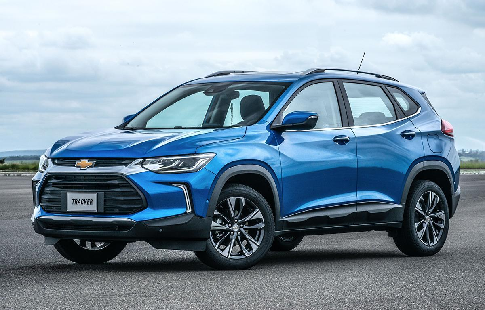
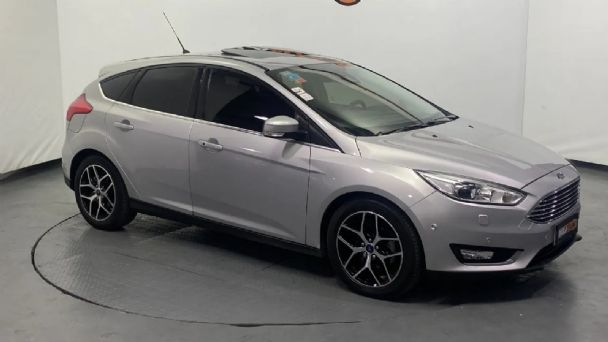
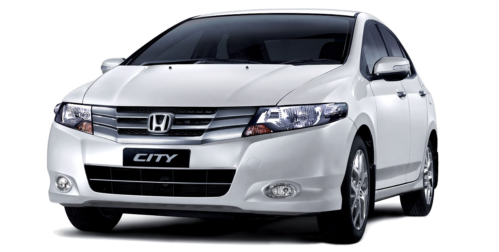
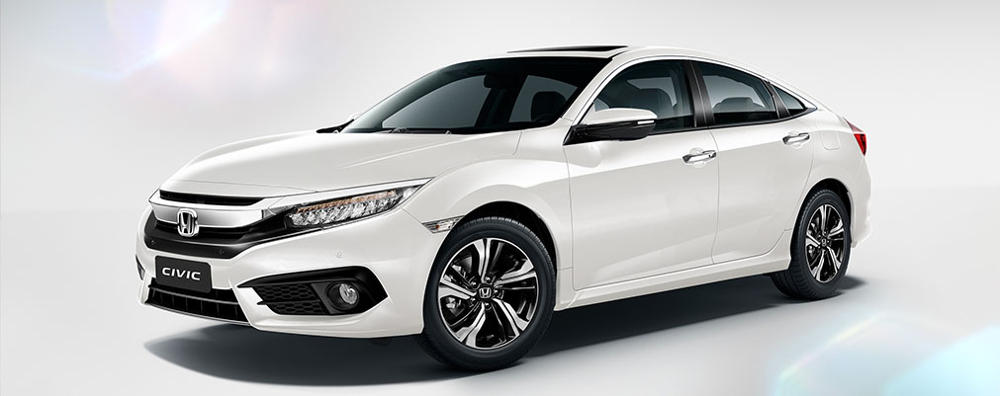
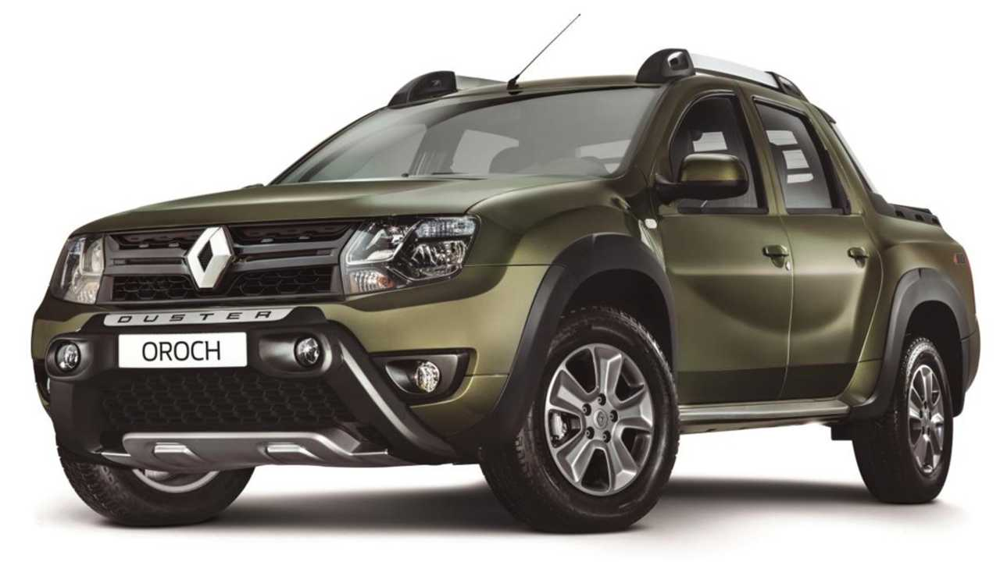
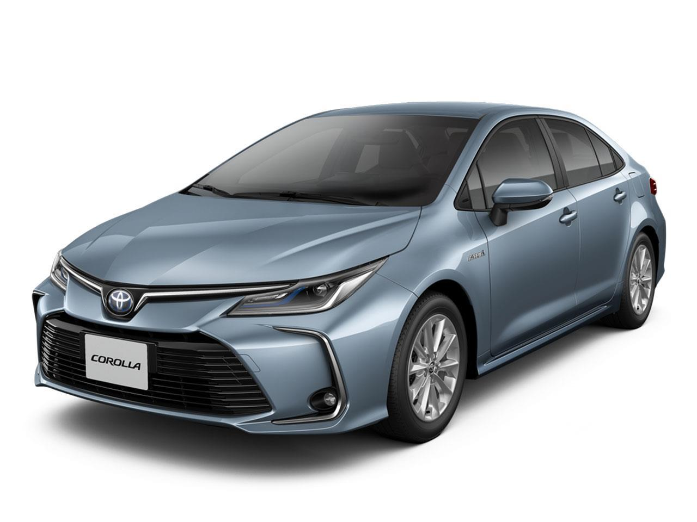

Todos Motores
Chevrolet Cruze

- Motor: L4 1.4L turbocargado; 153hp
- Transmisiones: Manual; 6 velocidades y Automática; 6 velocidades
- Baul 419L
- Consumo estimado: Ciudad: 16.1km/L
- Precio desde $4 millones
Chevrolet Onix

- Motor: 1.0, 3 cilindros en linea, 116 hp
- Transmisiones: Automática de 6 velocidades
- Baul 303L
- Consumo estimado: Ciudad: 23km/L
- Precio desde $3,76millones
Chevrolet Tracker Suv

- Motor: 1.2 turbo, 130hp
- Transmisiones: Manual y Automática
- Baul 393L
- Consumo estimado: N/D
- Precio desde $4,37millones
Ford Focus

- Motor: 1.6, 125cv
- Transmisiones: 5 velocidades manual
- Baul 316L
- Consumo estimado: Ciudad: 7,25 l/100km
- precio desde $4,30millones
Honda City

- Motor: 1.5, 120cv
- Transmisiones: 5 velocidades manual
- Baul 506L
- Consumo estimado: Ciudad: 14km/l
- precio desde $5 millones
Honda Ciciv

- Motor: 2.0 litros y 154 cv
- Transmisiones: manual y automatica
- Baul 525L
- Consumo estimado: Ciudad: 7,9 l/100km
- Precio desde $7 milloones
Renault Duster

- Motor: 2.5 litros y 105 cv
- Transmisiones: manual 5v y automatica 6v
- Baul 475L
- Consumo estimado: Ciudad: 9 l/100km
- Precio desde $ 5 millones
Toyota Corolla

- Motor: 1.8 litros y 140 cv
- Transmisiones: manual y automatica
- Baul 470L
- Consumo estimado: Ciudad: 8,8 l/100 km
- Precio desde $7 millones